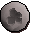

")
Runecrafting - Crafting Runes
Introduction
As you enter the mysterious ruins, walk towards the centre to find the altar. Once there, click on the altar to convert all the blank essence in your inventory to runes. This does not work with rune essence notes - so redeem your essence notes and take actual rune essence with you when attempting to craft runes. To exit, find the portal and enter it. You will be teleported back outside.
Below is a table of the basic runes and the Runecrafting levels required to make them.
Rune |
Level Required |
Essence Required |
Members |
Experience gained (per rune essence) |
![[image]](../../img/main/kbase/items/runes/arune.gif) Air |
1 |
![[image]](../../img/main/kbase/items/runes/blankrune.gif) ![[image]](../../img/main/kbase/items/runes/pure_ess.gif) Rune or pure essence |
No | 5.0 |
![[image]](../../img/main/kbase/items/runes/mrune.gif) Mind |
2 |
Rune or pure essence |
No | 5.5 |
![[image]](../../img/main/kbase/items/runes/wrune.gif) Water |
5 |
Rune or pure essence |
No | 6.0 |
![[image]](../../img/main/kbase/items/runes/erune.gif) Earth |
9 |
Rune or pure essence |
No | 6.5 |
![[image]](../../img/main/kbase/items/runes/frune.gif) Fire |
14 |
Rune or pure essence |
No | 7.0 |
![[image]](../../img/main/kbase/items/runes/brune.gif) Body |
20 |
Rune or pure essence |
No | 7.5 |
![[image]](../../img/main/kbase/items/runes/crune.gif) Cosmic |
27 |
Pure essence |
Yes | 8.0 |
![[image]](../../img/main/kbase/items/runes/chrune.gif) Chaos |
35 |
Pure essence |
Yes | 8.5 |
Astral |
40 |
Pure essence |
Yes | 8.7 |
![[image]](../../img/main/kbase/items/runes/nrune.gif) Nature |
44 |
Pure essence |
Yes | 9.0 |
![[image]](../../img/main/kbase/items/runes/lrune.gif) Law |
54 |
Pure essence |
Yes | 9.5 |
![[image]](../../img/main/kbase/items/runes/death_rune.gif) Death |
65 |
Pure essence |
Yes | 10.0 |
![[image]](../../img/main/kbase/items/runes/blrune.gif) Blood |
77 |
Pure essence |
Yes | 10.5 |
![[image]](../../img/main/kbase/items/runes/srune.gif) Soul* |
n/a | Pure essence |
Yes | 11.0 |
* Soul runes can currently only be crafted at the Ourania Altar (see below) and as such do not require a specific Runecrafting level. The experience listed above is the basic experience, which will be doubled for using the Ourania Altar.
Making Multiple Runes
As your Runecrafting skill develops, you will have more chance of crafting multiple runes from one piece of rune essence.
Below, we offer a table that shows the Runecrafting level that is required to guarantee that you get more than one rune from your essence. However, there is a chance that you'll get more runes per essence even if you are below these skill levels: for example, if you have a Runecrafting level of 25 and attempt to craft some earth runes (level 26 Runecrafting for two guaranteed earth runes) then you still have a very good chance of crafting two earth runes per essence. This also applies to higher level runes that do not appear in the table below; the higher your Runecrafting level, the greater chance you have of receiving two runes from one piece of essence.
NOTE - There is a limit to the number of runes that you can make from each essence. You cannot make three law runes from one essence, for example, as the upper limit for law runes is two runes per essence.
Remember that, although you are getting multiple runes per essence, you will only get Runecrafting experience for each essence you convert into runes. For example, if you are level 33 Runecrafting and you craft four air runes per essence, you only get experience for the one rune essence, not for making four air runes.
Name |
Level for 2 runes per 1 essence |
Level for 3 runes per 1 essence |
Level for 4 runes per 1 essence |
Level for 5 runes per 1 essence |
Level for 6 runes per 1 essence |
Level for 7 runes per 1 essence |
Level for 8 runes per 1 essence |
Level for 9 runes per 1 essence |
Level for 10 runes per 1 essence |
Air |
11 |
22 |
33 |
44 |
55 |
66 |
77 |
88 |
99 |
Mind |
14 |
28 |
42 |
56 |
70 |
84 |
98 |
- |
- |
Water |
19 |
38 |
57 |
76 |
95 |
- |
- |
- |
- |
Earth |
26 |
52 |
78 |
- |
- |
- |
- |
- |
- |
Fire |
35 |
70 |
- |
- |
- |
- |
- |
- |
- |
Body |
46 |
92 |
- |
- |
- |
- |
- |
- |
- |
Cosmic |
59 |
- |
- |
- |
- |
- |
- |
- |
- |
Chaos |
74 |
- |
- |
- |
- |
- |
- |
- |
- |
Astral |
82 |
- |
- |
- |
- |
- |
- |
- |
- |
Nature |
91 |
- |
- |
- |
- |
- |
- |
- |
- |
Ourania Altar
If you feel like a change of pace in your Runecrafting, you might consider paying a visit to the Ourania Altar, west of the Battlefield. The Zamorak Magical Institute (ZMI) discovered this most unusual altar and are capitalising on its unique properties to build up their stores of runes.
Once inside, whichever path you choose - whether the long, safe path or the short, more dangerous one - you'll arrive at the Ourania Altar. The thing about this altar the Zamorakians are so enamoured with is that it can craft pure essence (and only pure essence) into ANY rune, even those above your current Runecrafting level. Unfortunately - whether it's due to being damaged or if it was meant to work this way - the runes you get will be completely random.
|
|
|
|
|
|
|
|
|
|
 |
|
|
The better your Runecrafting level, though, the more chance you have of crafting the higher-level runes. You will gain double the experience that you would have for individually crafting each of the runes, but the way the altar works, you will only receive one rune per essence - even if you have the Runecrafting level to 'double-craft' a particular rune - and it does not produce combination runes.
Note that you do not need a talisman or tiara to craft runes at the Ourania Altar.
Back at the cave's entrance you'll find Eniola, a representative of the Bank of RuneScape. The Zamorakians have requested his services to improve the efficiency of their Runecrafting, but he has been instructed to allow adventurers to benefit from his services, as long as they pay him 20 of any type of rune. You can choose the type of rune you wish to pay with.
Combining Runes
For those who are experienced in Runecrafting, it is possible to use pure essence to bind two forms of an elemental rune into a single rune. One which acts in place of two separate runes of different elements, allowing the well prepared wizard to save precious space in their inventory.
To make combination runes, you will need to have a rune of one elemental type, a talisman which matches the type of elemental rune you have brought with you, and some pure essence. You should then head to the altar of the secondary element you wish to bind into your combination rune (as shown in the table below). Use the talisman that matches the elemental runes you brought with you on the altar of the secondary element and you will attempt to bind the energies into a combination rune.
For example: Mud runes are a combination of earth and water runes. So to make mud runes you will need some earth runes, an earth talisman and some pure essence. Go to the water altar and use the earth talisman on the altar and you will craft the runes. Alternatively, you can take water runes and a water talisman to the earth altar.
Rune |
Combination method 1 |
Combination method 2 |
Required Level |
Experience Gained |
|
| Method 1 | Method 2 | ||||
![[image]](../../img/main/kbase/items/runes/mistrune.gif) Mist |
Water combined at air altar | Air combined at water altar | 6 |
8.0 | 8.5 |
![[image]](../../img/main/kbase/items/runes/dustrune.gif) Dust |
Earth combined at air altar | Air combined at earth altar | 10 |
8.3 | 9.0 |
![[image]](../../img/main/kbase/items/runes/mudrune.gif) Mud |
Earth combined at water altar | Water combined at earth altar | 13 |
9.3 | 9.5 |
|  Smoke |
Fire combined at air altar | Air combined at fire altar | 15 |
8.5 | 9.5 |
![[image]](../../img/main/kbase/items/runes/steamrune.gif) Steam |
Fire combined at water altar | Water combined at fire altar | 19 |
9.5 | 10.0 |
![[image]](../../img/main/kbase/items/runes/lavarune.gif) Lava |
Fire combined at earth altar | Earth combined at fire altar | 23 |
10.0 | 10.5 |
The runes and pure essence will be converted into an equal number of combination runes. This process of combining runes uses up your original runes, your pure essence and your talisman!
There is a 50% chance of success when you combine runes, but you can increase this to 100% by wearing a binding necklace. The binding necklace deteriorates as you combine your runes. After combining runes fifteen times, the binding necklace will vanish.
Click here to view the Runecrafting FAQs

More articles in
Runecrafting
|
|
|
Further Help
If this article does not help you, you may find the following sections of the RuneScape site helpful:
|
|